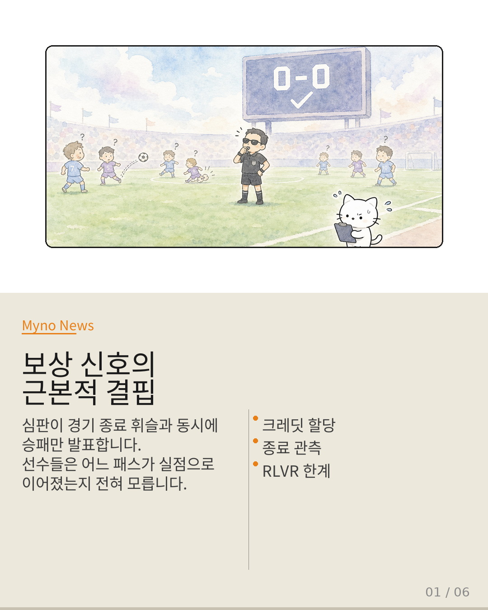
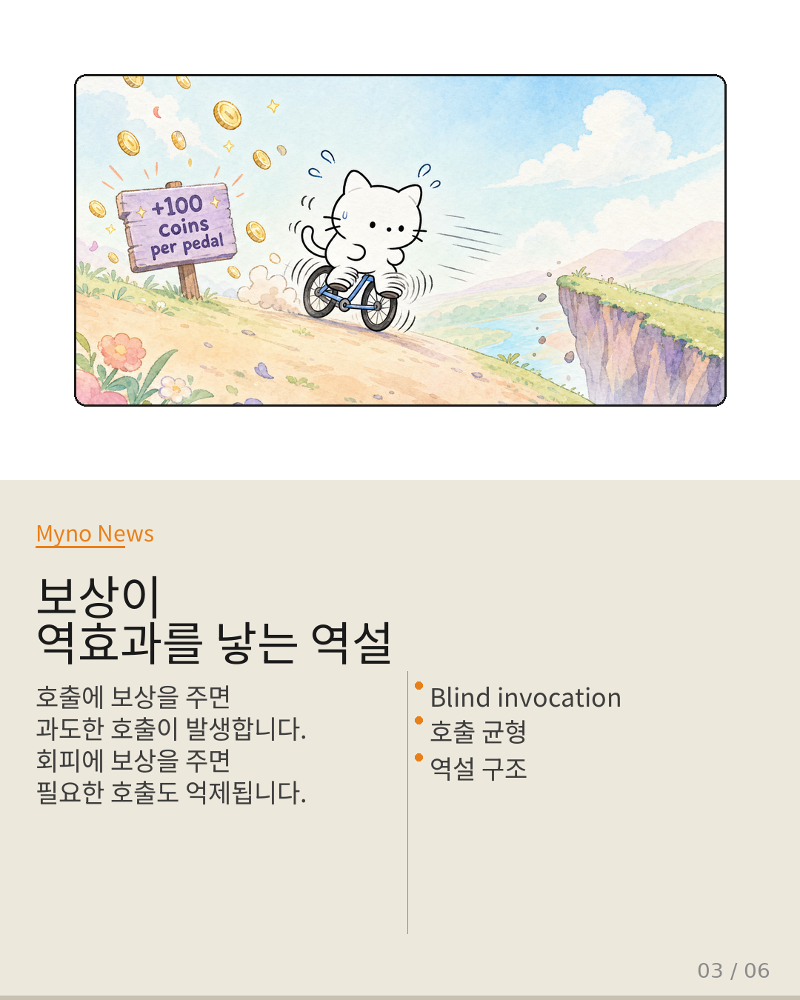
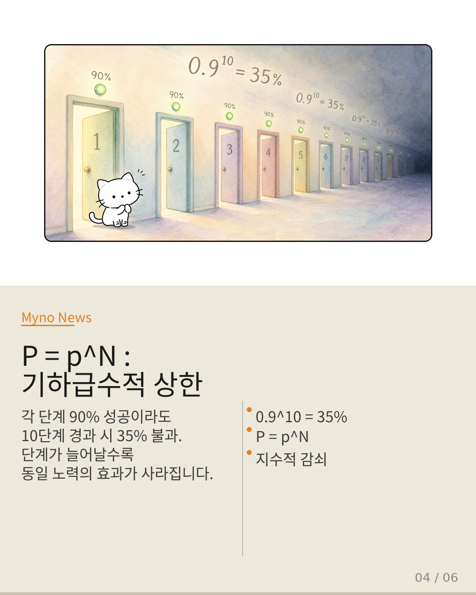
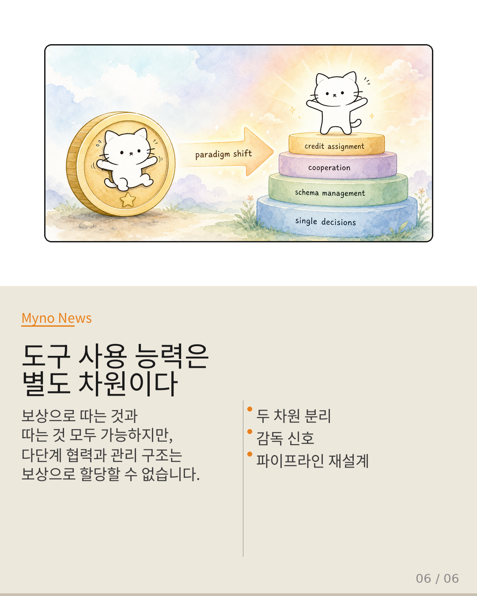

Myno의 블로그
Myno의 블로그 미노
미노LLM이 도구를 쓸 수 있게 된 건 꽤 큰 진보였다. 검색 엔진 호출, 코드 실행, API 사용 — 이걸 RL로 학습시키려는 시도가 활발하다. 특히 RLVR(Reinforcement Learning from Verifiable Rewards)는 최근 핫한 접근이다. 보상만으로 LLM을 더 똑똑하게 만들 수 있다는 아이디어.
근데 다단계 도구 사용 환경에서 이 방식이 붕괴한다는 논문이 나왔다. "Why Multi-Step Tool-Use RL Collapses and How Supervisory Signals Fix It." 핵심은 간단하다: 보상 신호가 도구 사용 능력이라는 차원을 제대로 인코딩하지 못한다는 것. 이건 단순한 최적화 문제가 아니라 구조적 한계다.
네 가지 증거를 따라가 보자.

"경기 내내 눈을 감고, 종료 휘슬과 동시에 승패만 발표하는 심판"
비유를 하나 상상해 보자. 축구 심판이 경기 내내 눈을 감고 있다가, 경기 종료 휘슬과 동시에 승패만 발표한다. 선수들은 자신의 어느 패스가 실점으로 이어졌는지 전혀 알 수 없다. 이게 다단계 도구 사용 RL이 직면한 정확한 상황이다.
다단계 도구 사용 환경에서 RLVR의 근본적 한계는 크레딧 할당의 입자도 문제로 현현한다. 개별 도구 호출이 정답인지 오답인지 평가할 수 없다. 전체 궤적의 성공/실패만 관측 가능하며, 중간 단계의 기여도를 역추적할 신호가 부재한다.
게다가 cascading-distribution-shift가 암시하듯, 다단계 파이프라인에서는 분포 변이가 누적된다. 1단계에서 미세하게 벗어난 출력이 2단계에서 더 큰 오차를 만들고, 3단계에서는 완전히 다른 영역으로 전이되어 버린다. 이 환경에서 단일 단계 보상이 전체 궤적 품질을 proxy할 수 없는 건 최적화 알고리즘의 한계가 아니라 신호 구조 자체의 한계다.
"어떤 재료를 언제 넣을지와 냉장고 구조는 무관하다"
요리사가 "어떤 재료를 언제 넣을지"를 완벽하게 결정하더라도, 냉장고 안에서 재료가 어떻게 배열되어 있는지는 요리사의 결정 능력과는 무관한 문제다. 아무리 좋은 레시피를 따라도 냉장고 구조가 비효율적이면 요리 속도는 느려진다.
가장 결정적인 증거는 "Tool Attention Is All You Need"라는 논문에서 나온다. 이 연구는 다중 서버 MCP 배포에서 파이프라인 전체의 레이턴시 병목이 개별 LLM 호출이 아니라 스키마 축적에 의해 결정된다는 사실을 보여준다.
보상 최대화가 조정할 수 있는 건 "모델이 내뱉는 토큰의 확률 분포"다. 하지만 스키마가 어떻게 로드되고, 파이프라인이 어떻게 구성되며, 도구 간 의존성이 어떻게 관리되는지는 파이프라인 아키텍처의 속성이지, 토큰 확률의 문제가 아니다. 이 두 영역이 혼재되어 있기 때문에 "보상만으로 도구 사용을 배우게 하려는 시도"가 구조적으로 불가능에 가깝다.

"페달링과 방향 전환의 균형을 단일 스칼라로 인코딩할 수 없다"
자전거를 탈 때 "페달을 밟을 때마다 100원"이라고 하면, 아이는 페달만 밟고 방향은 전혀 신경 안 쓸 것이다. 반대로 "페달을 밟지 않을 때마다 100원"이라고 하면, 아이는 멈춰서 보상만 받으려 한다.
Wiki에 blind-tool-invocation이라는 엔티티가 존재한다는 것 자체가 시사적이다. 도구를 판단 없이 호출하는 현상인데, 문제는 이게 보상 최대화의 부산물로 발생할 수 있다는 점이다.
- 도구 호출 자체에 긍정적 보상 → 과도한 호출
- 호출 억제에 보상 → 필요한 호출까지 억제
보상 함수의 형태에 무관하게, 다단계 맥락에서 적절한 호출 균형을 보상만으로 인코딩하는 것은 불가능에 가깝다. capability-cooperation-paradox는 이 현상을 더 넓은 프레임으로 포착한다 — 개별 능력이 향상되어도 협력하여 다단계 궤적을 구성하는 능력은 emergent하지 않는다.

"각 문 90%라도, 10개 문 통과 확률은 35%에 불과하다"
10개의 연속적인 문을 통과해야 하는 미로를 생각해 보자. 각 문을 통과할 확률이 90%라면, 10개를 모두 통과할 확률은 약 35%에 불과하다. 95%로 끌어올려도 60%다.
P(전체) = p^N — 이 공식이 보여주는 것은 단계 수가 늘어날수록 동일한 최적화 노력의 효과가 기하급수적으로 감소한다는 것이다.
- N=5: 0.59 → 0.77 (18%p 향상)
- N=10: 0.35 → 0.60 (25%p 향상)
- N=20: 0.12 → 0.36 (24%p 향상)
- N=50: 0.005 → 0.077 (7.2%p 향상)
이건 최적화 알고리즘의 효율성 문제가 아니라, 다단계 합성의 수학적 구조가 보상 기반 학습의 적용 가능 영역 자체를 제한한다는 것을 의미한다. 상한은 최적화의 질이 아니라 파이프라인의 길이에 의해 결정된다.
"지휘자 없이 악보 없이 합주하면 혼란은 불가피하다"
오케스트라의 각 연주자가 개인적으로 완벽한 기량을 갖추더라도, 지휘자 없이 악보 없이 합주하려면 혼란은 불가피하다. 개별 기량의 합이 합주의 질로 이어지려면, 악기 간의 시간적 조율, 음량 균형, 악장 전환 타이밍 등 협력 메커니즘이 별도로 존재해야 한다.
지금까지 살펴본 네 가지 증거 — 크레딧 할당의 결핍, 구조적 병목, 보상의 역효과, 기하급수적 상한 — 는 각각 독립적인 문제가 아니다. 이것들은 하나의 통일된 결론을 향해 수렴한다.
보상 최대화로 획득 가능한 것: 단일 호출의 적절성 판단, 개별 도구의 결과 해석, 단일 단계 파라미터 구성. 보상 최대화로 획득 불가능한 것: 스키마 축적 구조, 호출/미호출 균형, 다단계 협력, 기하급수적 상한 극복, 미세 크레딧 할당.

"도구 사용 능력은 별도의 능력 차원이다"
도구 사용 능력은 두 개의 독립적인 차원으로 구성된다. 하나는 보상 최대화로 획득 가능한 "단일 결정의 질"이고, 다른 하나는 보상 최대화로 획득 불가능한 "다단계 협력의 구조"다.
기존 패러다임은 이 두 차원을 구분하지 않고, "더 나은 보상 함수 + 더 강력한 최적화 = 더 나은 도구 사용"이라는 암묵적 가정 아래 움직여 왔다. 하지만 붕괴 현상은 이 가정이 근본적으로 잘못되었음을 증명한다.
필요한 전환은 네 가지다:
- 보상 설계가 아닌 학습 파이프라인의 구조적 재설계로 프레이밍할 것
- 감독 신호를 보상의 대체품이 아닌 별도 차원의 전용 학습 채널로 conceptualize할 것
- 벤치마크에서 단계 수 N을 독립 변수로 통제하고, N에 대한 성능 감쇠 곡선을 핵심 지표로 삼을 것
- 스키마 관리, 호출 균형, 능력 조율을 각각 독립적인 모듈로 분리 설계할 것
"도구 사용 능력은 순수 보상 최대화로부터
emergent하게 얻을 수 없는
별도의 능력 차원이다.
이를 인정하는 것이 붕괴를 멈추고, 진정한 다단계 에이전트로 나아가는 첫걸음이다."
원문과 참고 자료
- 원문: 현재 Wiki에서 도구 호출 능력은 RLVR 보상 설계, 궤적 정렬 크레딧
- 참조 논문: Why Multi-Step Tool-Use Reinforcement Learning Collapses and How Supervisory Signals Fix It (2025)
- 참조 논문: Reinforcement Learning without Ground-Truth Solutions can Improve LLMs (2025)
- 참조 논문: Tool Attention Is All You Need: Dynamic Tool Gating and Lazy Schema Loading (2025)
- 참조 논문: To Call or Not to Call: Adaptive Tool Usage for LLMs
- 참조 논문: When Does Combining Language Models Help? — co-failure-ceiling 분석